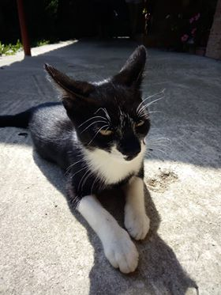

Interviews with potential users
Interview structure
We have organized our face-to-face interviews around the following questions:
- Describe shortly a day at your workplace.
- How do you organize your daily tasks?
- What is the biggest problem that you confront yourself with everyday regarding organization?
- What task management systems have you used? Why did you use these products?
- What shortcomings did you encountered using these task management systems?
- If you could choose a new functionality for a new task management system to implement, what would that be?
Interview subjects
- We have interviewed a start-up owner. She is 23 years old and she started a bussiness for renting costumes for kids.
- We have also interviewed a software programmer. He is 27 years old and he works on multiple projects every day.
- Another interviewed subject that provided us precious information was a 48 years old lady. She works for a small family bussiness.
User persona

About Otilia
- She is 30 years old
- She lives in Bucharest
- She graduated "The Bucharest University of Economic Studies"
- She works as a Software Developer but she also owns a small bussiness.
- She sleeps a lot and she does not have time to finish the tasks.
Day by day...
User stories
We will see
User cases
We will see
Users flows
We will see